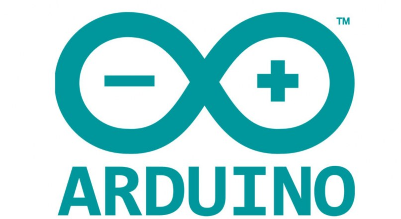

Strona domowa
Ta strona umożliwia zarządzanie oraz monitorowanie aktywności urządzeń.
Dostęp do spisu raportów aktywności urządzenia można znaleźć
tutaj.
Aby przejść do panelu zarządzania urządzeniami kliknij
tutaj.
ARDUINO® is trademark of Arduino SA